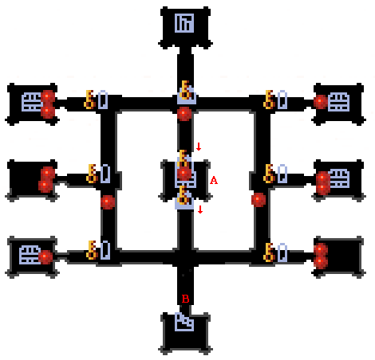

| 概要 | 情報 | アイテム一覧 |
| 敵キャラ一覧 | ステージ一覧 | 夢幻迷宮について |
| 攻略チャート | Zwei!! 攻略へ |
| ステージ選択へ |
プシュケの屋敷 Lv.9
|  | |
| 矢印 | 矢印が横にある扉は一方通行です。 |
| A | 部屋Aの宝箱を開くと、このフロアにある扉が全て開きます。 |
| B |
B地点にあるこの物体は、磁石で動かすことができます。 このステージには何個もあるので、邪魔だったら磁石を使いましょう。 |
 |
|
| C | 部屋Cの上側の扉を開閉するたびに敵が現れます。 全て倒すと、下側の扉が開くようになります。 |
| D | 部屋Dの宝箱にものを入れると、下側の扉が開きます。 また、同時に敵がたくさん現れます。 |
E |
E、E'地点のボタンスイッチをONにすると、E''の扉が開きます。 |
| F | 部屋Fの中央にある宝箱を開くと、部屋にある他の宝箱が全て開きます。 しかし、同時にたくさんの敵が現れます。 |
| G | G、G'、G''、G'''の宝箱にものを入れると、G''''地点の扉が開きます。 |
| H | 部屋Hの中央へ移動すると、部屋に敵がたくさん現れます。 出てくる「おちゃめいど」は、Lv.9ではかなり強い敵なので、注意しましょう。 |
| ステージ選択へ |
| 概要 | 情報 | アイテム一覧 |
| 敵キャラ一覧 | ステージ一覧 | 夢幻迷宮について |
| 攻略チャート | Zwei!! 攻略へ |
Zwei!!
| 目次へ戻る | ページの上部へ |